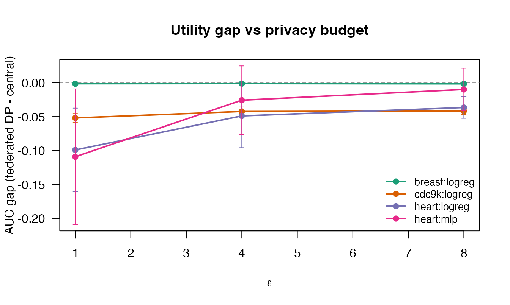

Utility Campaign: accuracy under the DP-always contract
utility-campaign.RmdEvery training run in dsFlower releases only a
differentially private model: the server-authoritative contract applies
DP-SGD (or the tree/vision equivalents) with node-owned epsilon, delta
and clipping, and there is no noiseless code path an analyst could
select. That contract makes classical “federated equals centralised”
validation impossible by design – the released model is
supposed to differ from the centralised fit. This article
documents the utility campaign that replaces it:
executed, committed evidence of what the DP-always contract costs in
predictive utility, and of whether the privacy mechanism behaves the way
its theory says it must.
All numbers on this page are computed at render time from the
evidence files committed under inst/extdata/campaign/.
Nothing is typed in by hand.
Design
Each campaign cell fixes a model contract, a dataset, a privacy budget epsilon and a replicate count, and runs a real three-node Flower federation over DSLite (SuperLink, one SuperNode per site, the canonical byte-verified runner – the same code path as a live Opal deployment, minus the transport stack). Per replicate the harness records three fits on identical splits:
-
central: the same model class trained on the pooled
data with no DP and no federation – the utility ceiling. For
pytorch_logregthis is the classical IRLS fit (glm); forpytorch_mlpit is the same torch architecture trained centrally with early stopping on an internal validation split (tools/campaign/central_train.py), so the ceiling reflects a well-trained rather than overfitted central model; -
federated_dp: the released
dsFlowermodel under the server-owned DP contract, evaluated after release on the public held-out test split (a zero-privacy-cost, client-side evaluation of an already-released model); - trivial: the majority-class baseline – the utility floor.
The primary metric is test AUC; accuracy, Brier score and log-loss
are stored alongside. The headline quantity is the utility gap
delta = AUC(federated_dp) - AUC(central).
Executed cells
| Dataset | Contract | Epsilon | Central AUC | Federated DP AUC | Utility gap | Gap SD (seeds) |
|---|---|---|---|---|---|---|
| Breast cancer (Wisconsin) (n = 683) | pytorch_logreg | 1 | 0.9984 | 0.9968 | -0.0016 | 0.0014 |
| Breast cancer (Wisconsin) (n = 683) | pytorch_mlp | 1 | 0.9973 | 0.9967 | -0.0006 | 0.0005 |
| Breast cancer (Wisconsin) (n = 683) | pytorch_logreg | 4 | 0.9984 | 0.9970 | -0.0014 | 0.0004 |
| Breast cancer (Wisconsin) (n = 683) | pytorch_logreg | 8 | 0.9984 | 0.9966 | -0.0017 | 0.0013 |
| CDC diabetes (stratified subsample) (n = 2,000) | pytorch_logreg | 1 | 0.8395 | 0.7901 | -0.0493 | 0.0376 |
| CDC diabetes (stratified subsample) (n = 45,000) | pytorch_logreg | 1 | 0.8199 | 0.8043 | -0.0156 | 0.0016 |
| CDC diabetes (stratified subsample) (n = 90,000) | pytorch_logreg | 1 | 0.8159 | 0.8077 | -0.0082 | 0.0017 |
| CDC diabetes (stratified subsample) (n = 9,000) | pytorch_logreg | 1 | 0.8265 | 0.7745 | -0.0520 | 0.0063 |
| CDC diabetes (stratified subsample) (n = 9,000) | pytorch_mlp | 1 | 0.8237 | 0.7780 | -0.0457 | 0.0133 |
| CDC diabetes (stratified subsample) (n = 9,000) | pytorch_logreg | 4 | 0.8265 | 0.7840 | -0.0425 | 0.0065 |
| CDC diabetes (stratified subsample) (n = 9,000) | pytorch_logreg | 8 | 0.8265 | 0.7847 | -0.0418 | 0.0054 |
| Heart disease (Cleveland) (n = 297) | pytorch_logreg | 1 | 0.9232 | 0.8241 | -0.0992 | 0.0616 |
| Heart disease (Cleveland) (n = 297) | pytorch_mlp | 1 | 0.9132 | 0.8040 | -0.1092 | 0.1000 |
| Heart disease (Cleveland) (n = 297) | pytorch_logreg | 4 | 0.9232 | 0.8742 | -0.0490 | 0.0469 |
| Heart disease (Cleveland) (n = 297) | pytorch_mlp | 4 | 0.9132 | 0.8873 | -0.0258 | 0.0505 |
| Heart disease (Cleveland) (n = 297) | pytorch_logreg | 8 | 0.9232 | 0.8866 | -0.0367 | 0.0158 |
| Heart disease (Cleveland) (n = 297) | pytorch_mlp | 8 | 0.9132 | 0.9032 | -0.0100 | 0.0313 |
The epsilon curve
If the released models actually carry calibrated noise, the utility gap must shrink (or stay flat once another error source dominates) as epsilon grows.

Three regimes are visible, and each is the theoretically expected one:
- Small n (heart, n = 303): the gap is largest at epsilon = 1 and shrinks steadily as the budget grows – per-sample noise dominates, so relaxing epsilon buys utility back. Seed dispersion also shrinks with epsilon.
- Moderate n (cdc9k): the gap improves from epsilon = 1 to 4 and then flattens: what remains at high epsilon is not privacy noise but the federation residual (five local-epoch rounds versus centralised SGD, plus clipping), which no epsilon can remove.
- Ceiling regime (breast): central AUC is ~0.998; the DP model tracks it within seed noise at every epsilon. When the task is this easy at this n, the contract’s default budget is effectively free.
Scaling with n
DP-SGD theory says per-sample noise impact shrinks roughly like
1/(n \* eps): at fixed epsilon, growing the cohort should
shrink the privacy part of the gap toward the federation residual.
With the full arm executed, the curve is unambiguous: at epsilon = 1
the AUC gap shrinks from about -0.05 at n = 2,000-9,000 to about -0.016
at n = 45,000 and -0.008 at n = 90,000. Two error sources shrink
together: the per-sample DP noise (the 1/(n eps) term) and
the federation residual itself, since local-epoch training tracks
centralised training better as per-site data grows. At population scale,
the default budget’s cost on this contract is under one AUC point.
Validation checks
The campaign treats the privacy gap as something to validate against its theoretical envelope – never against zero. Four checks, computed from the committed evidence:
- Monotonicity in epsilon: PASS – Gaps never worsen significantly (beyond seed SD) as epsilon grows.
- Utility floor: PASS – Every released model clears (or matches) the majority-class baseline; AUC well above 0.5 throughout.
- Seed dispersion: PASS – At the noise-dominated small-n cell, dispersion shrinks as epsilon grows.
- Red-flag scan (gap near zero at small n times epsilon): PASS – No hard-task low-budget cell shows an implausibly absent privacy cost.
The cross-validation capability, live
Beyond single trainings, the campaign exercises the federated
cross-validation capability over the same live federation:
folds clean federated trainings under one
node-owned privacy contract (80% of the per-job budget split across the
fold trainings, 20% spent once on the single pooled differentially
private out-of-fold release; no fold model, fold metric or site metric
ever leaves the nodes). The central twin is the pooled out-of-fold
glm over the same fold count on the pooled data.
The first execution of these cells did what run-at-pin validation is
for: it surfaced a deterministic defect (manifest doubles serialized at
15 significant digits failed the trusted runner’s
rel_tol = 1e-15 budget recomputation, so every CV round
failed closed as unavailable), which was fixed in dsFlower 0.4.2 with
lossless 17-digit manifests – the runner is byte-identical, so no noise
stream changed. See
tools/campaign/FINDING-cv-live-federation.md for the full
record.
| Dataset | n | Contract | Folds | Epsilon | Central OOF AUC | Released DP OOF AUC |
|---|---|---|---|---|---|---|
| cdc9k | 9000 | pytorch_logreg | 3 | 4 | 0.819 ± 0.001 | 0.768 ± 0.005 |
| heart | 297 | pytorch_logreg | 3 | 4 | 0.877 ± 0.008 | 0.508 ± 0.101 |
At n = 9,000 the released pooled OOF AUC sits a plausible DP-gap below the central OOF twin (per-fold training budget ≈ epsilon x 0.8 / folds), while the small heart cohort shows the expected noise-dominated dispersion; the released tree also carries pooled ROC, precision-recall, calibration and decision curves under the same single release.
Cross-generation anchor
The archived first-generation evaluation (noiseless architecture,
retired in June 2026) reported an AUC gap of about -0.05
for logistic regression on the CDC cohort at epsilon = 2 under its own
harness. The current campaign’s cdc9k cell reproduces the same order of
gap at epsilon = 1 under the rebuilt DP-always architecture – two
independent implementations, two years of rework apart, agreeing on the
cost of private federated logistic regression on this cohort.
Scope and honesty
- These cells cover the
pytorch_logregandpytorch_mlpcontracts; they establish the campaign harness and the validation methodology across a convex and a non-convex neural contract. Thepytorch_mlpcells reproduce the logreg regimes (ceiling on breast; a comparable moderate-n gap on cdc9k; a larger, higher-dispersion noise-dominated gap on heart, with the additional observation that DP training degrades threshold calibration before it degrades ranking). Extending the matrix across the remaining vetted contracts is queued: the native-tree track requires its separately verified XGBoost bundle, the vision and sequence tracks await dedicated compute and dataset decisions, and the remaining regression/multiclass contracts need per-family metric design; every future cell lands as another committed JSON that this page ingests automatically. - The
federated_dpcolumn is the released model evaluated on a public held-out split; no evaluation touches protected data and none costs privacy budget. - Each evidence file records package versions, host, seeds, split policy, model hyperparameters, per-replicate metrics and the full privacy configuration, so any cell can be re-executed and compared byte-for-byte.